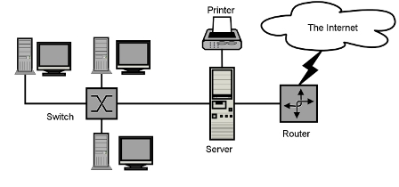
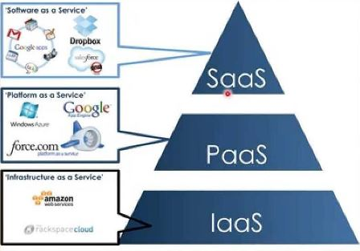
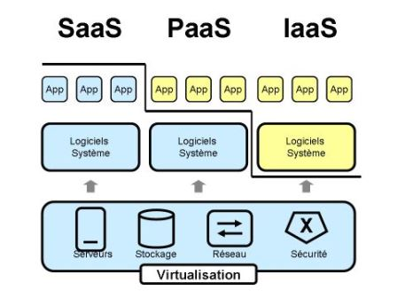

Le Cloud Computing ou l'informatique en nuage (infonuagique au Québec), correspond à l’accès à des services informatiques (serveurs, stockage, mise en réseau, logiciels) via Internet (cloud ou nuage) à partir d’un fournisseur. Pour en savoir plus sur le sujet, regardez cette vidéo explicative :
|
|---|
Pour en savoir plus sur le DEC Infrastructure et Sécurite du Collège BdeB, cliquez sur ce lien
Aujourd’hui, le Cloud Computing est devenu la nouvelle forme de stockage de données utilisée de plus en plus par les entreprises de toutes les industries. Mais de quoi s’agit-il
Le Cloud Computing est un terme général employé pour désigner la livraison de ressources et de services à la demande par internet. Il désigne le stockage et l’accès aux données par l’intermédiaire d’internet plutôt que via le disque dur d’un ordinateur. Il s’oppose ainsi à la notion de stockage local, consistant à entreposer des données ou à lancer des programmes depuis le disque dur. La notion de Cloud ne doit pas non plus être confondue avec celle du Network Attached Storage (NAS), utilisée par beaucoup d’entreprises via un serveur en résidence. Ces réseaux locaux n’entrent pas dans la définition du Cloud. Cependant, certains NAS permettent d’accéder aux données à distance depuis Internet.
De manière générale, on parle de Cloud Computing lorsqu’il est possible d’accéder à des données ou à des programmes depuis internet, ou tout du moins lorsque ces données sont synchronisées avec d’autres informations sur internet. Il suffit donc pour y accéder de bénéficier d’une connexion internet.

L’image du Cloud est utilisée de façon métaphorique pour désigner internet. Cette comparaison date de l’époque à laquelle on représentait les infrastructures gigantesques des fermes de serveurs internet sous la forme d’un grand nuage blanc, acceptant les connexions et distribuant des informations tout en flottant.
Cette technologie permet aux entreprises d’acheter des ressources informatiques sous la forme de service, de la même manière que l’on consomme de l’électricité, au lieu d’avoir à construire et entretenir des infrastructures informatiques en interne.
Cette technologie offre plusieurs avantages et bénéfices pour les utilisateurs professionnels et les utilisateurs finaux. Les trois principaux avantages sont l’approvisionnement en libre-service, l’élasticité, et le paiement à l’utilisation. L’approvisionnement en libre service permet aux utilisateurs finaux d’accéder à n’importe quelle ressource informatique à la demande. L’élasticité offre l’opportunité d’augmenter ou de réduire la consommation de ressources en fonction des besoins de l’entreprise. Enfin, le paiement à l’utilisation autorise les firmes à ne payer que pour les ressources consommées.
Pour de nombreuses personnes, le stockage local utilisé pendant les dernières décennies demeure aujourd’hui supérieur au Cloud Computing. Ces personnes considèrent qu’un disque dur permet de garder les données et les programmes physiquement proches, autorisant un accès rapide et simplifié pour les utilisateurs de l’ordinateur ou du réseau local.
On distingue principalement trois types de service :
 
En 2020, le Cloud Computing demeure un secteur en pleine croissance et plus mature, on assiste notamment à la migration multicloud et dans ce contexte, le classement des meilleures entreprises cloud Computing reste difficile à établir car tributaire du domaine d’activité.
Ainsi, Amazon Web Services (AWS), Microsoft Azure et la plateforme Google Cloud sont les meilleures dans le cadre de l'infrastructure en tant que service (IaaS), tandis que IBM, Dell Technologies, Hewlett-Packard Enterprise et VMware excellent dans le cadre de déploiements hybrides multicloud.
Pour en savoir plus, veuillez consluter mon BLOG